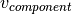

seapy.components.structural3d.Component3D¶
- class seapy.components.structural3d.Component3D(name, system, **properties)[source]¶
Bases: seapy.components.structural.ComponentStructural
- __init__(name, system, **properties)¶
Constructor.
Parameters: - name (string) – Identifier
- system (seapy.system.System) – System
- component (seapy.components.component) – Component
Methods
__init__(name, system, **properties) Constructor. disable([subsystems]) Disable this component. enable([subsystems]) Enable this coupling. info([attributes]) Return dataframe. plot(quantity[, yscale]) Plot quantity. Attributes
SORT str(object=’‘) -> str SUBSYSTEMS dict() -> new empty dictionary availableSubsystems list() -> new empty list classname Name of class of the object. enabled Switch indicating whether the object is enabled. frequency Frequency. height float(x) -> floating point number included Indicates whether the object is included in the analysis. length float(x) -> floating point number linked_junctions linked_subsystems mass Mass  of the component.
of the component.material name velocity Velocity of the component . velocity_level Velocity level  .
.volume Volume  of the component.
of the component.width float(x) -> floating point number